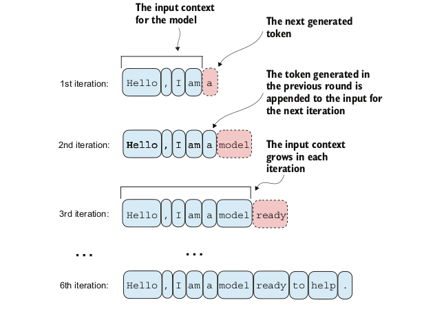
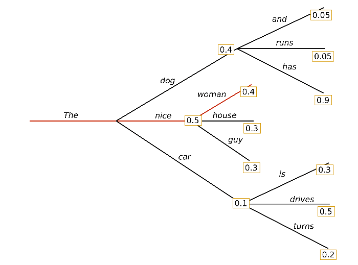
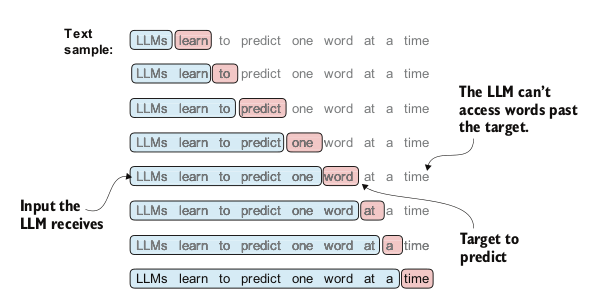

Topics Covered
GPT-2 Architecture Review
- Layer Normalization
- Self-Attention in GPT-2
- Feed-Forward Network (FFN)
- Residual Connections
Training GPT-2
- Text generation
- Greedy decoding loop
- Training loop
GPT-2 Architecture
- GPT model stacks multiple transformer decoder blocks
- Each block has:
- Masked Multi-Head Self-Attention layer
- Feed-Forward Neural Network (FFN)
- Layer Normalization and Residual Connections
- Final output layer

GPT-2 Architecture
- 12 Transformer blocks
- 768-dimensional hidden states
- 12 attention heads
- Vocabulary size: 50,257 tokens

Autoregressive Text Generation
LLMs generate text one token at a time through an iterative process:
- Start with an input context (e.g., "Hello, I am")
- Model predicts the next token probability distribution
- Select the next token (highest probability = greedy decoding)
- Append token to context
- Repeat until desired length

Key Insight: The model consumes its own previous outputs as future inputs - this is the autoregressive property.
Logits to Token Selection
The GPT output is logits, not probabilities.
- Logits ∈ ℝ^V
- Softmax converts logits -> probability distribution
- Argmax selects most likely token
probas = torch.softmax(logits, dim=-1)
token_id = torch.argmax(probas)

Understanding the Generation Flow
Input → Token IDs → Model → Logits → Softmax → Token Selection → Output
| Step | Operation | Shape Transformation |
|---|---|---|
| 1 | Tokenize input | "Hello, I am" → [15496, 11, 314, 716] |
| 2 | Model forward | (1, 4) → (1, 4, 50257) |
| 3 | Extract last logits | (1, 4, 50257) → (1, 50257) |
| 4 | Softmax | logits → probabilities |
| 5 | Argmax | select token ID 257 → "a" |
| 6 | Concatenate | extend sequence for next iteration |

Greedy Decoding Loop
Greedy decoding selects the highest-probability token at each step.
Properties:
- Deterministic
- Fast
- Often repetitive / dull

Greedy decoding = always take the most confident step.
- Does Greedy Decoding produce best text?
- Why not generate whole sentences?
- How different from encoder and decoder models?
Why Untrained Models Generate Gibberish
Before training:
- Weights are random
- Logits are random
- Token probabilities are near-uniform
With vocab size = 50,257:
Initial probability ≈ 1 / 50,257 ≈ 0.00002
Thus generated text is effectively random noise.
Training Overview
- Training Loop
- Loss Optimization
- Data Loading
- Model Evaluation
- Using Pretrained weights
Evaluating Generative Text Models
Why Evaluation Matters
Before training, we need metrics to:
- Measure model performance quantitatively
- Track training progress
- Detect overfitting
- Compare different models
Key Challenge: How do we numerically assess the quality of generated text?
Solution: Use the model's own probability estimates vs true probabilties for the "correct" next tokens.
Cross Entropy Loss for Language Modeling
The training objective: Maximize the probability of the correct next token
Given:
- Inputs: Token IDs the model sees
- Targets: Token IDs the model should predict (inputs shifted by 1)
inputs = torch.tensor([[16833, 3626, 6100], # ["every effort moves",
[40, 1107, 588]]) # "I really like"]
targets = torch.tensor([[3626, 6100, 345 ], # [" effort moves you",
[1107, 588, 11311]]) # " really like chocolate"]
Cross-entropy loss measures how well the model's predicted probabilities match the true next tokens.
Mathematical Formula:
$ \text{Loss} = -\frac{1}{N} \sum_{i=1}^{N} \log P(x_i^{\text{target}}) $
Where:
- $N$ = total number of tokens
- $P(x_i^{\text{target}})$ = predicted probability for the correct token at position $i$
- The negative sign converts it to a loss (we want to maximize probability = minimize negative log probability)
Calculating Cross Entropy Loss

Understanding Cross Entropy Loss
Step-by-step computation
- Get logits from model: shape
(batch, seq_len, vocab_size) - Apply softmax to get probabilities
- Extract target probabilities: probability assigned to correct tokens
- Apply logarithm: log probabilities are more numerically stable
- Average over all tokens
- Negate: we minimize negative log-likelihood
In PyTorch, we can compute this in one step using cross_entropy function:
# PyTorch does all 6 steps in one function:
loss = torch.nn.functional.cross_entropy(logits_flat, targets_flat)
Initial loss (untrained model): ~10.99
Target loss (well-trained): approaches ~0
Perplexity: Interpretable Metric
Perplexity = exp(cross_entropy_loss)
Interpretation: The effective vocabulary size the model is "uncertain" about at each step.
Interpretation:
- Effective number of equally likely tokens
- Lower is better
perplexity = torch.exp(loss)
# For initial loss of 10.79: perplexity ≈ 48,725
# Meaning: model is unsure among ~48,725 tokens
| Loss | Perplexity | Interpretation |
|---|---|---|
| 10.79 | 48,725 | Random guessing (vocab size: 50,257) |
| 5.0 | 148 | Moderate uncertainty |
| 2.0 | 7.4 | Low uncertainty |
| 0.5 | 1.65 | Very confident |
Processing Data for Training
- Given a text corpus
- split into training and validation sets
- for each set encode it to token IDs
- create input-target pairs
- Inputs and targets are created by shifting token IDs by one position

In Pytorch
- Dataset Encodes all text to token IDs
- DataLoader handles batching and shuffling:
Training vs Validation Loss
During training we split data into :
- Training set
- Validation set
train_ratio = 0.90
split_idx = int(train_ratio * len(text_data))
train_data = text_data[:split_idx]
val_data = text_data[split_idx:]
What to watch for:
- Training loss decreases, Validation loss decreases -> Model is learning and generalizing
- Training loss decreases, Validation loss increases -> OVERFITTING!
The Training Loop
During Training we update model weights to minimize loss through backpropagation and gradient descent.

Training Loop in code
for epoch in range(num_epochs):
model.train() # Enable dropout
for input_batch, target_batch in train_loader:
optimizer.zero_grad() # Reset gradients
loss = calc_loss_batch(input_batch, target_batch, model, device)
loss.backward() # Calculate gradients
optimizer.step() # Update weights
Loading and Saving Model Weights
We must save trained models to:
- Avoid retraining
- Share models with others
- Resume training later
- Deploy to production
# ============ SAVE ============
torch.save(model.state_dict(), "model.pth")
# Save model + optimizer (for resuming training)
torch.save({
"model_state_dict": model.state_dict(),
"optimizer_state_dict": optimizer.state_dict(),
}, "model_and_optimizer.pth")
# ============ LOAD ============
# Load weights into fresh model
model = GPTModel(GPT_CONFIG_124M)
model.load_state_dict(torch.load("model.pth", map_location=device))
model.eval() # Set to evaluation mode
# Resume training
checkpoint = torch.load("model_and_optimizer.pth", map_location=device)
model = GPTModel(GPT_CONFIG_124M)
model.load_state_dict(checkpoint["model_state_dict"])
optimizer = torch.optim.AdamW(model.parameters(), lr=5e-4, weight_decay=0.1)
optimizer.load_state_dict(checkpoint["optimizer_state_dict"])
model.train() # Set to training mode
LLM Loss Surfaces
LLM training optimizes a high-dimensional non-convex loss surface defined by:
L(θ) = −E[log p_θ(tokenₜ₊₁ | contextₜ)]
Key properties:
- Billions of parameters
- Extremely overparameterized
- Many equivalent minima
- Flat basins dominate
More details in :